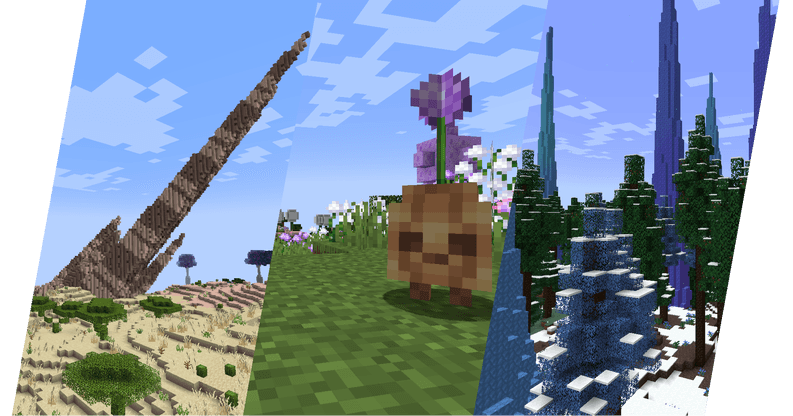

What Is Oh The Biomes We've Gone?
Oh The Biomes We've Gone is the sequel to the timeless Oh The Biomes You'll Go mod for 1.20.1+ with over 50 breathtaking magical and realistic biomes. BWG will take you on an adventure by adding diverse and detailed life to Minecraft. BWG also adds new unique mobs, structures, and hundreds of blocks to utilize.

Check Out Their Content And Community!
Join their Discord!
Follow them on X!
Support their Patreon!
Download the Mod!